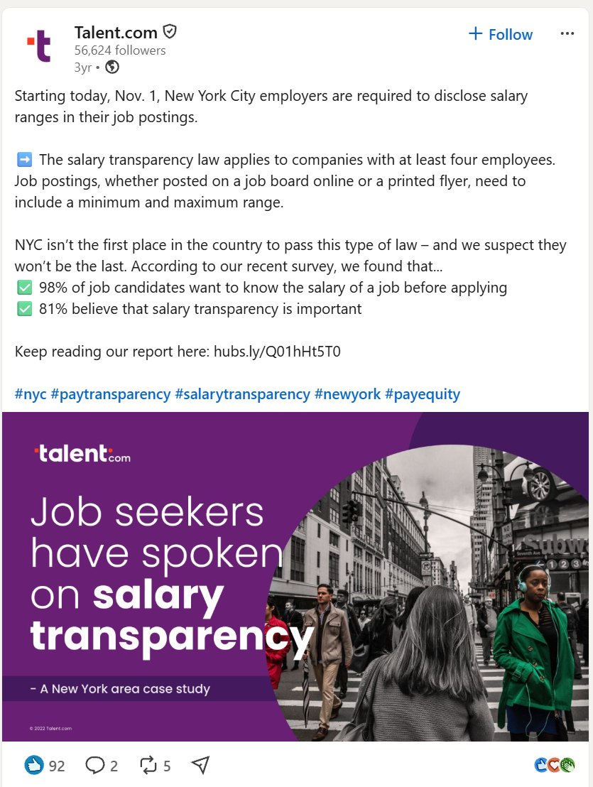
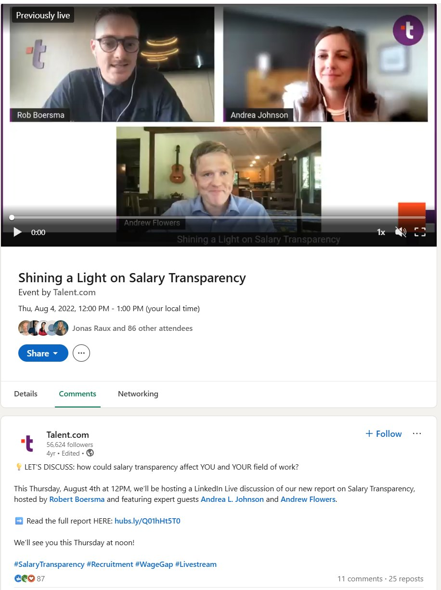
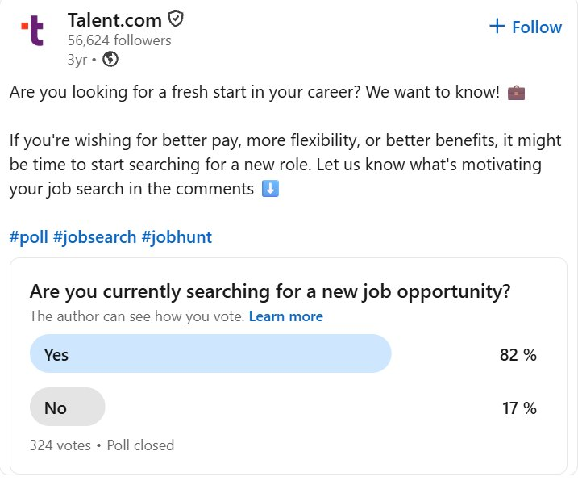
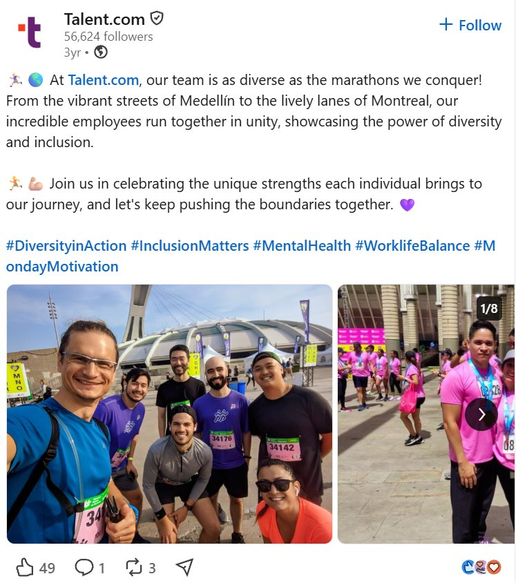
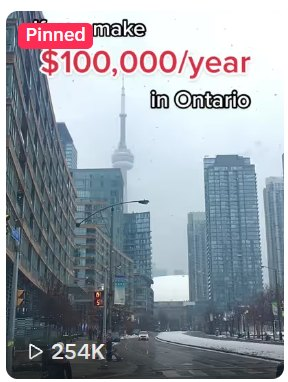
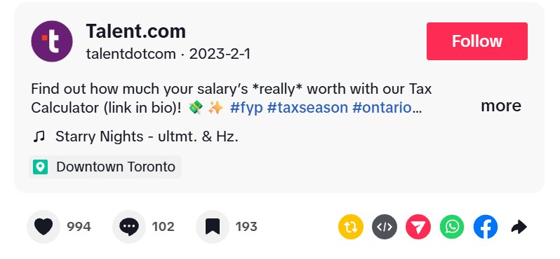
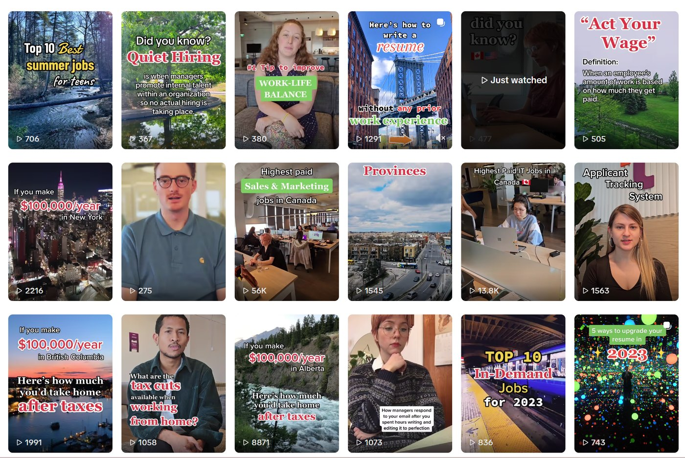
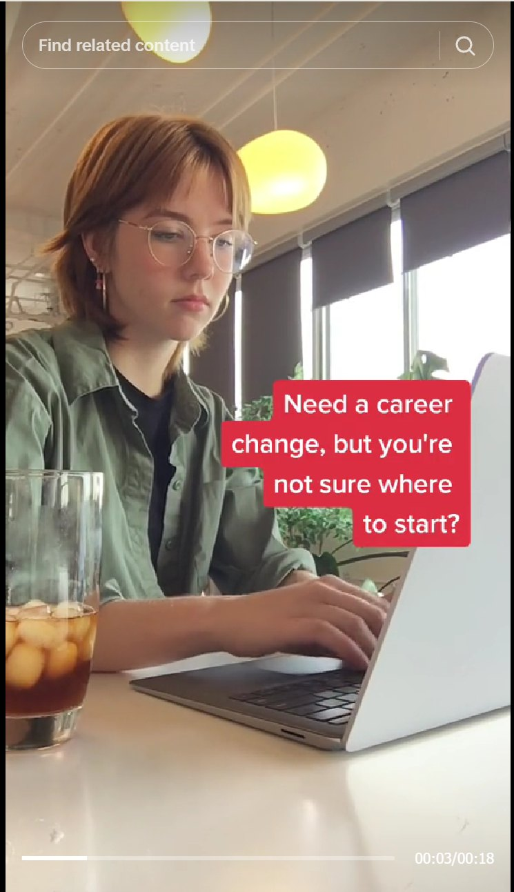
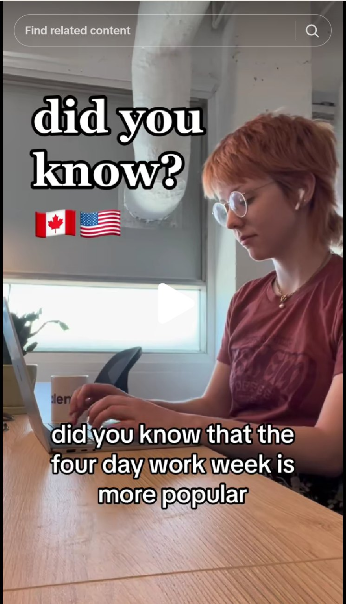
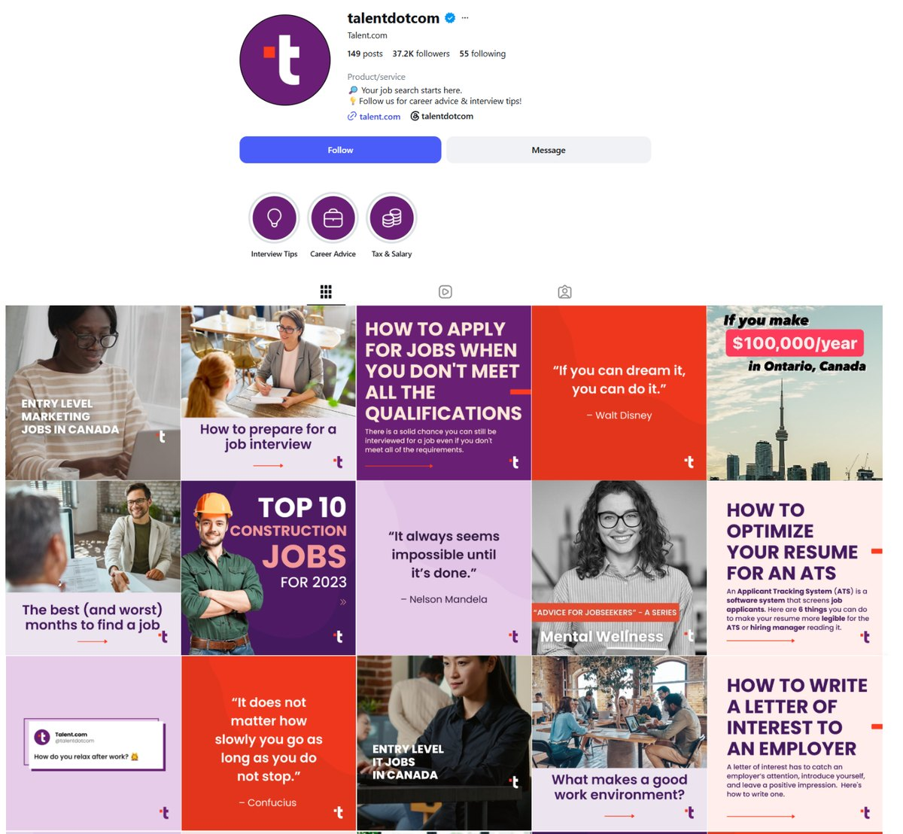

At Talent.com, I helped launch the company’s TikTok and Instagram accounts and ran its LinkedIn page, including a LinkedIn Live and day-to-day audience engagement.
Role
Social Media Coordinator
Company
Talent.com (Montreal, QC)
Timeline
Jul 2022 – Aug 2023
Tools
LinkedIn, TikTok, Instagram, Figma, Canva, HubSpot, Power Automate
Posts, polls, and a LinkedIn Live
LinkedIn · Talent.com company page
I ran the LinkedIn page: company news, data from Talent.com’s own surveys, culture posts, and conversations with followers. When New York City’s salary transparency law took effect on November 1, 2022, we turned our survey findings into a post that day. A poll asking job seekers if they were searching drew 324 votes, and a LinkedIn Live that August gave our salary transparency report a second life as a live discussion with expert guests.

A timely post on NYC’s salary transparency law: 92 reactions, 5 reposts

The LinkedIn Live announcement: 87 reactions, 25 reposts

A poll that pulled in 324 votes

A culture post featuring our team at two marathons
Follower counts in these screenshots are from October 2026, not from my time at Talent.com.
The tax breakdown that hit 254K views
TikTok · @talentdotcom
The account’s most successful video was my idea: “If you make $100,000/year in Ontario,” a breakdown of what you’d actually take home after taxes, set over my own footage of downtown Toronto. It was posted in February 2023 and has 254K views, 994 likes, 102 comments, and 193 saves. It pointed viewers to Talent.com’s tax calculator in the bio.


The format became a series, with the same tax breakdown for New York, British Columbia, and Alberta. Other videos covered the highest-paying jobs in Canada, resume tips, and explainers on workplace terms.

The TikTok grid
I also showed up on camera for some of the explainers.


Building an Instagram feed from scratch
Instagram · @talentdotcom
I helped launch the Instagram account alongside TikTok. The post layouts came from the brand’s design templates, and I filled them in with my own copy in Figma, using Canva for other designs and HubSpot to schedule posts. The feed mixes career-advice carousels, top-10 job lists, quote graphics, and light question posts like “What made you smile today?” to start conversations. Story highlights sort the advice into interview tips, career advice, and tax and salary.

The Instagram profile
Follower and post counts are from October 2026, not from my time at Talent.com.
Getting posts out of other teams’ heads
Good social content often starts with someone else, like an event the events team just ran or a win the sales reps just had. I built forms, with Power Automate behind them, so the events team and sales reps could submit photos and post ideas directly, instead of sending them over scattered messages.